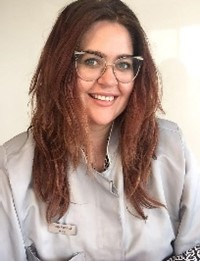

Sobre
A A_MI é uma clínica especializada em saúde e educação, que oferece serviços de qualidade para pessoas de todas as idades, com ou sem necessidades especiais. Fundada em 04 de julho de 2019 pela psicopedagoga Flávia Maoski, a A_MI conta com uma equipe multidisciplinar de psicólogos, psicopedagogos, fonoaudiólogos, fisioterapeutas, terapeutas ocupacionais e neuropediatras. A clínica utiliza as mais avançadas tecnologias para proporcionar terapias eficazes e personalizadas, respeitando o ritmo e as potencialidades de cada paciente. Os atendimentos podem ser individuais ou em grupo, e os programas são planejados para alcançar resultados a curto, médio e longo prazo. A Terapia Cognitiva A_MI é um espaço inovador e acolhedor, que visa o desenvolvimento físico, intelectual e emocional de todos que buscam uma melhor qualidade de vida.
Equipe a_mi
Flávia Maoski
Diretora da A_MI
Com 18 anos de experiência na área da educação, ela é a responsável pela gestão da equipe multidisciplinar e administrativa da Clínica Ami, uma referência em atendimento especializa do para crianças e adolescentes. Formada em pedagogia pela Universidade Federal do Paraná, ela possui duas pós-graduações: uma em Psicopedagogia pela FAE Centro Universitário e outra em Gestão estratégica de pessoas pela PUC PR. Além disso, ela tem cursos de extensão em Analista do Comportamento (ABA) e Metodologia Snoezelen pela AMCIP.
Géssica Wengrzen
Pedagoga
Realiza acompanhamentos de alunos em horários alternativos à escola, avaliação pedagógica e atendimentos domiciliares. Possui especialização em Neuropsicologia Educacional e em Educação na Primeira Infância.
Ary Maóski
Neuropsicólogo- 08/0012
Sou formado em Psicologia pela PUC PR (1975) e tenho pós-graduação em Avaliação e reabilitação neuropsicológica pelo Instituto Sapiens. Também sou especialista em dinâmica de grupo pela Sociedade Brasileira de Dinâmica de Grupo e pós-graduando em Terapia Cognitivo Comportamental, pelo SECAD. Realizo avaliações neuropsicológicas e atendo crianças, adolescentes e adultos em meu consultório, lidando com diversas demandas e transtornos.
Vida
Cão-terapeuta (Cinoterapia)
Olá, eu me chamo Vida e sou um cão terapeuta da Clínica Ami. Sou um Bernedoodle, uma mistura de Poodle com Boiadeiro de Berna, duas raças muito inteligentes e divertidas. Tenho um temperamento equilibrado, carinhoso, esperto e humilde, e por isso consigo auxiliar muitas pessoas que precisam de apoio emocional, físico ou mental. Sei como acalmar alguém que está em crise, dando um abraço bem forte e quentinho. Também gosto de brincar e fazer graça com quem quer se distrair ou relaxar. Sou muito fotogênico e adoro passear pelo parque e pelo shopping, sempre perfumado e elegante. Sou um astrocanino, pois sou ENORME e charmoso. Se você quiser saber mais sobre mim, entre em contato, pois estou sempre pronto para ajudar! Lambeijos, Vida!
Luana Rigoni
Profissional de Letras
Sou formada em Letras (Português/Inglês) pela FAE Centro Universitário e tenho experiência em alfabeti zação de crianças com TEA (Transtorno do Espectro Autista) pelo Instituto Nuppes. Também sou capacitada em Snoezelen- MSE (AMCIP) e em Introdução ao protocolo ABLLS (Instituto Goiás). Estou fazendo pós-gradua ção em TEA (CBI Of Miami). Meu foco de atuação é a Linguística, especialmente a Pragmática, buscando estimular a comunicação por meio de atividades lúdicas. Além disso, ofereço trabalho de reforço escolar e alfabetização seguindo a metodologia holandesa Snoezelen, que se baseia em um ambiente multissensorial.
Tânia Bianca Fagundes Anton
Psicóloga e coordenadora ABA
Sou formada em Psicologia pela Universidade Federal da Grande Dourados, com licenciatura e bacharelado. Tenho pós-graduação em Análise do Comportamento Aplicada ao Autismo (ABA) e mestrado em Psicologia pela mesma instituição. Possuo diversos cursos na área de psicologia infantil, autismo e análise do comportamento, como: A família e seu papel no desenvolvimento infantil; Manejo de comportamento problema e segurança individual; Fases do atendimento clínico analítico comportamental e as limitações do comportamento verbal; Manual do Inventário Portage Operacionalizado; VB-MAPP; Capacitação e Aprimoramento em ABA; M-CHAT: Escala para rastreamento precoce de autismo; CARS: Escala de avaliação do autismo na infância. Atuo como psicóloga clínica, com ênfase no atendimento de crianças com autismo e seus familiares, utilizando a abordagem da análise do comportamento.
Luciana Favorido
Fonoaudióloga ABA
Sou formada em Fonoaudiologia pela FMUSP e tenho pós-graduação em Tratamento no Transtorno do Espectro Autista pelo Centro Universitário Celso Lisboa. Também fiz cursos de aperfeiçoamento em técnicas como PROMPT, terapia para apraxia de fala na infância, ABA e comunicação alterna tiva em TEA. Além disso, participei de congressos sobre recursos facilitadores para o aprendi zado motor. Tenho experiência em atender crianças e adolescentes com dificuldades de comuni cação, linguagem e fala, buscando sempre oferecer um tratamento individualizado e humanizado
Talita Pedrini da Silva
Terapeuta ocupacional (Integração sensorial)
Sou formada em Neurologia pela UFPR desde 2013, com especialização em Neuropediatria pelo IBRATE em 2015. Também tenho a Certificação internacional em Integração Sensorial de Ayres pela CLASI desde 2017. Trabalho com reabilitação neurológica, deficiências neuromotoras, intervenção precoce, atrasos no desen volvimento, TEA, terapia de integração sensorial e desenvolvimento infantil. Faço adaptações e órteses de membros superiores para os meus pacientes.
Pamela Emanuelle de Oliveira
Psicóloga
Psicóloga pós graduada em ABA
Análise do Comportamento Aplicado
Serviços
Além de todas as terapias e especialidades disponíveis, a A_MI também realiza exames e avaliações. Confira os serviços disponíveis!
PAC
Avaliação D-LOTCA
Avaliação Neuropsicológica
Avaliação psicopedagógica
Orientação vocacional e profissional
Vídeos Inclusão A_Mi (Google Drive) Videos A_MI
Missão
Acreditamos que cada pessoa com deficiência neurológica ou psicológica tem o direito de desenvolver seu potencial e participar da sociedade. Por isso, trabalhamos para oferecer serviços de apoio e reabilitação que respeitem as necessidades e os interesses de cada indivíduo. Nosso objetivo é promo ver a autonomia, a inclusão e a qualidade de vida das pessoas que atendemos.
Valores
Somos uma equipe multidisciplinar que acredita no potencial de cada ser humano, por isso o centro de terapias integradas A_MI oferece a seus pacientes um espaço acolhedor, seguro, ético e respeitoso, onde podem se conhecer melhor, se valorizar, se transformar e se projetar para o futuro.
Visão
Nossa visão é proporcionar tratamentos que ajudem cada paciente a evoluir e se aperfeiçoar de acordo com suas demandas e aspirações. Buscamos atender as pessoas que necessitam com terapias de excelência , tecnologias modernas e profissionais altamente capacitados.